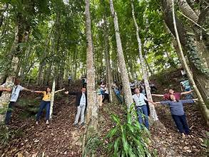
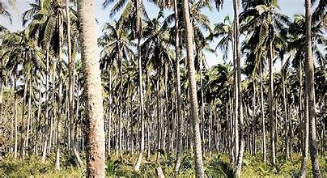
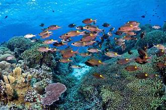
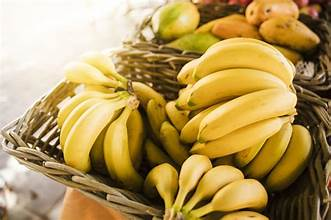
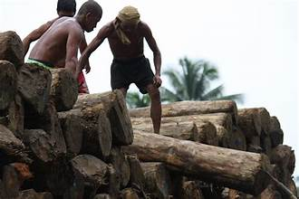
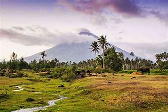

Zamboanga del Sur is endowed with diverse natural resources that support the livelihoods of its population and drive the local economy. These include forests, marine ecosystems, minerals, and fertile agricultural land.
The province contains significant areas of tropical forest, particularly in the upland and mountainous regions. These forests provide timber, rattan, bamboo, and non-timber forest products. They also serve as critical watersheds that supply water to lowland communities.
The coastal waters of Illana Bay and the Moro Gulf are rich in fish, shellfish, seaweed, and other marine organisms. The province's fishing grounds are among the most productive in Mindanao, supporting thousands of fishing families.
The province has known deposits of gold, copper, and chromite, particularly in the mountainous interior. Small-scale and artisanal mining activities are present in some areas, though large-scale extraction remains limited.
The fertile river valleys and coastal plains support the cultivation of rice, corn, coconut, banana, and various vegetables. The province is a significant producer of copra and other coconut-based products.
Efforts are ongoing to protect the province's natural heritage through forest conservation programs, marine protected areas, and sustainable agriculture initiatives led by both government and local communities.
Hover to fan · Hover a photo to pick


